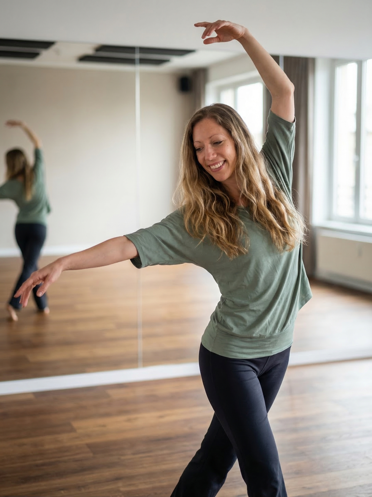

Meine Geschichte
Ich war die, die
immer alles schafft.
Neben dem Studium gearbeitet. Früh Führungsverantwortung übernommen. Mehrmals pro Woche trainiert. Meisterschaften getanzt. Morgens vor der Arbeit noch Lese- und Rechtschreibförderung gegeben.
Ich war ehrgeizig. Und ich war stolz darauf. Was ich lange nicht verstanden habe: Ich habe Leistung mit Wert verwechselt.
Mein Körper begann irgendwann mitzureden. Schlafprobleme. Bluthochdruck. Daueranspannung. Aber ich konnte das gut wegschieben. „Ich muss funktionieren. Das halte ich noch durch."
Und dann kam meine erste wunderbare Tochter – und plötzlich funktionierte nichts mehr. Mein System hatte keine Reserven mehr. Ich war ständig gereizt, unser Wunschkind erlebte ich fast nur als „anstrengend". So konnte ich nicht mehr weitermachen.
Ich integrierte wieder stärker Tanzen in mein Leben. Das hat mein Leben verändert. Heute lebe ich mit 2 Kindern ein Leben voller Leichtigkeit und Freude – auch wenn die äußeren Umstände herausfordernd sind, wirft mich nichts mehr so leicht aus der Bahn.
Genau dieses Gefühl möchte ich anderen weitergeben.